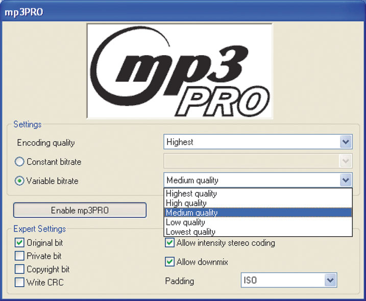

Technologia opracowana przez szwedzką firmę Coding Technologies, a licencjonowana przez Thomson Multimedia. W założeniach miała ona całkowicie zastąpić bardzo popularny format MP3.
Nowa technologia, w której powstał Mp3Pro, pozwala na zmniejszenie objętości plików dźwiękowych nawet o 50% w porównaniu z MP3. Utwór zakodowany w MP3Pro z gęstością 64 kb/s odpowiada teoretycznie jakością utworowi MP3 zakodowanemu z gęstością 128 kb/s. W praktyce jakość tych plików jest wyższa, gdyż MP3Pro nie usuwa dźwięków o najwyższych częstotliwościach, jak to robi MP3. Zmniejszenie wielkości plików ma przede wszystkim zaspokoić potrzeby użytkowników Internetu - o wiele łatwiej przesyłać je pocztą elektroniczną. Ponadto pozwala to na zmieszczenie dwukrotnie większej liczby plików w pamięci przenośnych odtwarzaczy. MP3Pro jest w pełni kompatybilne jedynie z odtwarzaczami MP3 produkowanymi przez firmę Thomson, przez co format ten jest mało rozpowszechniony. Opłaty za korzystanie z nowego formatu są niewiele wyższe niż za "zwykłe" MP3.
Do konwersji na format Mp3Pro przydatne są programy Adobe Audition, Nero Wave Editor oraz darmowy Thomson mp3Pro audio player.
